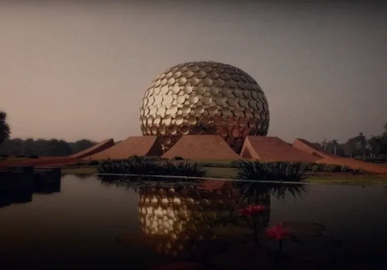
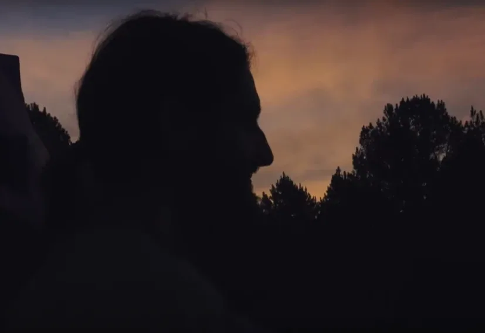
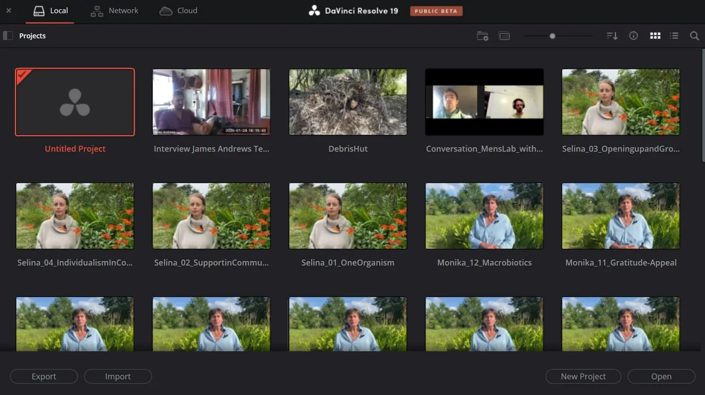
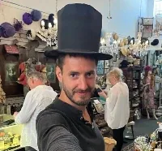

Leonhard Geupel on Strikingly
-
My cinematic thinking grows from a longing for truth and depth.
I don’t necessarily provide answers — rather open spaces where questions can breathe.
The films that move me most are those that unfold long after they end, leaving traces in both mind and heart.
My aim: to open perspectives, to inspire, to cause transformation.
And although my images create space, I never lose focus — The first moment matters. I want to touch, captivate, and stay.


-
"Loving John" is in the making - a film about a man that wants to discover Archetypal Love by clearing up his past with his five ex-partners - but it costs him more than he can imagine.
Right now I'm deep inside the writing.
While the film unfolds, I'm documenting its creation:
Behind "Loving John" - a blog revealing thought processes, feelings, discoveries and insights around making "Loving John".
-
Documentary "Boa Sorte Com Isso" - Cinematography in Brazil
A three-month journey documenting the creation of a regenerative community in the wilds of Rio Grande do Sul.
I filmed not just people, but the rhythm of living together.
[
](https://custom-images.strikinglycdn.com/res/hrscywv4p/image/upload/c_limit,fl_lossy,h_9000,w_1920,f_auto,q_auto/9758639/621344_803792.jpeg)
[

](https://custom-images.strikinglycdn.com/res/hrscywv4p/image/upload/c_limit,fl_lossy,h_9000,w_1920,f_auto,q_auto/9758639/967914_504376.png)
Editing Experiments - Personal Projects
From party mixtapes in Audacity to birthday videos in iMovie, and interviews shaped in Filmora and DaVinci Resolve.
These were spaces to learn rhythm, emotion, and the invisible cut.
Not polished - but honest.
I am learning. What is not here yet is part of the process.
-
For any inquiries or questions about mutual collaboration, please use the form below and I will get back to you.

Get in Touch with Leonhard!